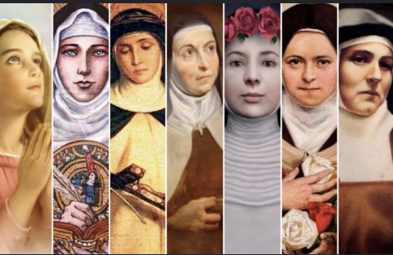

Když jsem poprvé přišla do Španělska, jedna z věcí, které mě šokovaly, byla křestní (především ženská) jména. Slečna u kasy supermarketu, která hrdě nese cedulku se jménem CONCEPCION – neboli „POČETÍ", servírka, na kterou volají ASUNCIÓN (tedy „NANEBEVZETÍ") či sousedka AMPARO („ÚTOČIŠTĚ").
I když je dnešní Španělsko jen velmi málo katolické (ve srovnání s nedávnou minulostí), mají tu ženská jména často náboženský charakter, což je důsledkem silné katolické tradice, která je v zemi hluboce zakořeněná. Tato jména nejsou jen pouhou formalitou – odrážejí víru, kulturu a historii Španělska.
Přijde mi to zajímavé, a tak jsem připravila malou ukázku toho, jak se ve Španělsku můžete jmenovat.
Úplně nejlepší mi přijde, když se žena jmenuje MARÍA JOSÉ (Marie Josef) a muž JOSÉ MARÍA (Josef Marie) – vždycky si říkám, jak taková země může fungovat? :-D (ona funguje, jen to člověk musí pobrat a pochopit)... tak tedy...
Začínáme perličkami
Ve Španělsku existuje mnoho starších, jednoslovných, náboženských ženských jmen, která jsou hluboce zakořeněná v katolické tradici. Tato jména jsou nejen krásná, ale také nesou silný symbolický význam. Zde je výběr těch nejznámějších:
Jména inspirovaná Pannou Marií a křesťanskou vírou
- Asunción – Nanebevzetí, připomíná Nanebevzetí Panny Marie.
- Pilar – Sloup, odkazuje na Pannu Marii na sloupu (Nuestra Señora del Pilar).
- Concepción – Početí, symbolizuje Neposkvrněné početí Panny Marie.
- Dolores – Bolesti, odkazuje na Pannu Marii Sedmibolestnou.
- Luz – Světlo, připomíná Pannu Marii Světla.
- Mercedes – Milosti, připomíná Pannu Marii Milosrdnou (Nuestra Señora de la Merced).
- Rosario – Růženec, symbol modlitby růžence.
- Carmen – Hora Karmel, Panna Marie Karmelská.
- Ángeles – Andělé, Panna Marie Andělů.
- Paz – Mír, Panna Marie Míru.
- Soledad – Osamělost, Panna Marie v Osamění.
- Milagros – Zázraky, Panna Marie Zázračná.
- Victoria – Vítězství, Panna Marie Vítězná.
- Regina – Královna, odkaz na Pannu Marii Královnu nebes.
- Amparo – Útočiště, Panna Marie jako ochránkyně.
Tradiční náboženská ženská jména
Jména inspirovaná Pannou Marií
- María del Carmen (Mari del Karmen) – Panna Marie Karmelská
- María de los Ángeles (Mari de los Anchelés) – Panna Marie Andělů
- María del Rosario (Mari del Rosarjo) – Panna Marie Růžencová
- María de la Concepción (Mari de la Konsepšjón) – Panna Marie Neposkvrněného početí
- María de la Asunción (Mari de la Asunsjón) – Panna Marie Nanebevzatá
- María de la Paz (Mari de la Pas) – Panna Marie Míru
- María de la Luz (Mari de la Luz) – Panna Marie Světla
- María de los Dolores (Mari de los Dolorés) – Panna Marie Sedmibolestná
- María del Pilar (Mari del Pilar) – Panna Marie na sloupu (patronka Zaragozy)
- María de la Merced (Mari de la Merced) – Panna Marie Milosrdná
Jména inspirovaná dalšími svatými
- Teresa (po svaté Terezii z Ávily)
- Lucía (po svaté Lucii, patronce slepých)
- Catalina (po svaté Kateřině)
- Rosa (po svaté Růženě Limské)
- Ángela (po svaté Anděle)
- Clara (po svaté Kláře z Assisi)
- Margarita (po svaté Markétě)
- Inés (po svaté Anežce Římské)
- Ana (po svaté Anně, matce Panny Marie)
Kombinovaná jména
- María Teresa
- Ana María
- María Isabel
- María Jesús (Mari Chus) – velmi časté a oblíbené jméno
- María José (Mari Chosé) – jméno inspirované Svatou rodinou
Moderní variace
- Luz María – kombinace světla a Panny Marie
- Pilar María – obrácený formát běžného „María del Pilar"
- Carmen Rosa – kombinace dvou mariánských zjevení
- María Ángeles (Mariánchi) – zkrácená a přezdívaná forma „María de los Ángeles"
- Amparo – Útočiště, Panna Marie jako ochránkyně.
Jména inspirovaná svatými nebo křesťanskými ctnostmi
- Virtudes – Ctnosti.
- Esperanza – Naděje.
- Caridad – Láska, dobročinnost.
- Fe – Víra.
- Gloria – Sláva.
- Regina – Královna.
- Inmaculada – Neposkvrněná.
- Purificación – Očištění (Panna Marie Očišťující).
- Visitación – Návštěva, připomíná návštěvu Panny Marie u Alžběty.
- Salvación – Spása.
Moderní podoba a změny: V moderní době jsou tato jména stále běžná, ale často jsou kombinována s dalšími jmény (např. María del Carmen, Ana María, María Jesús). Některá starší jména jako Asunción nebo Mercedes jsou dnes méně obvyklá, ale stále mají své příznivce, zejména v tradičních rodinách.
Zajímavost: Ve Španělsku se často používají přezdívky pro tato jména. Například María Jesús je známá jako „Chus", María de los Ángeles jako „Mariánchi" a María del Carmen jako „Maricarmen".
Náboženská jména jsou součástí kulturní identity Španělska a zůstávají důležitou součástí rodinné tradice i v moderní době.
